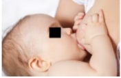
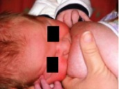

Questão 1 · Prevenção e manejo dos principais problemas relacionados à amamentação · Pediatria · 4000184717Recém-nascido (Rn) termo de parto cesárea por complicação materna (Descolamento prematuro de placenta), peso de nascimento de 3420g e APGAR 8/9. Mãe tem 36 anos G1P0A0, pré-natal sem outras intercorrências. O Rn está agora com 12 horas de vida e a mãe se queixa de baixa produção de leite materno. Ao exame físico, sem alterações. A melhor conduta frente a esse caso será:
A Iniciar domperidona para a mãe
B Orientar pega e aguardar apojadura
C Iniciar translactação com fórmula infantil
D Iniciar complementação com fórmula infantil em copinho
Questão 2 · Pediatria · Leite Materno X Outros leites · 4000183464“O leite humano tem vários fatores imunológicos específicos e não específicos que conferem proteção ativa e passiva contra infecções às crianças amamentadas”. Tratado de Pediatria/ SBP/2022. Assinale a alternativa que apresenta um componente do leite materno que NÃO é considerado um fator clássico de proteção imunológica para o recémnascido/ lactente.
A Lipase
B Lactoferrina
C Lisozima
D Fator bífido
E Oligossacarídeos
Questão 3 · Pediatria · Amamentação Aleitamento Materno · 4000182992Sobre o aleitamento materno (AM), é correto afirmar que são
A sinais de uma pega adequada: boca bem aberta, lábios virados para fora (boca de peixinho), queixo encostado na mama e ver a aréola mais abaixo do que acima da boca do bebê.
B interferências na absorção de ferro e o zinco do leite materno: oferta de leite de vaca ou outros alimentos antes dos seis meses para as crianças amamentadas exclusivamente ao seio.
C práticas que podem prejudicar o AM: oferecer mamadeira e chupeta, fumar durante a amamentação, usar medicamentos prescritos pelo obstetra, consumir bebida alcoólica.
D dificuldades frequentes durante o AM: demora na descida do leite, dificuldade na pega e na sucção do bebê, a pega do bebê em posição de cavalinho(sentada) ou com a mãe deitada.
Questão 4 · Pediatria · Amamentação Aleitamento Materno · 4000182298Sobre o aleitamento materno, é correto afirmar que:
A retirar um pouco de leite antes de colocar o bebê no peito pode facilitar a pega, se a mama estiver muito cheia nos primeiros dias, após a apojadura
B colocar o bebê no seio materno na primeira hora de vida não é vantajoso, uma vez que este ainda está muito sonolento
C se deve evitar colocar o bebê para sugar a mama que estiver apresentando fissura ou mamilos machucados
D se deve evitar amamentação na posição deitada, pelo maior risco de otite no bebê
Questão 5 · Pediatria · Amamentação Aleitamento Materno · 4000181886Maria é mãe de Miguel, que tem quatro meses. Miguel está em regime de aleitamento exclusivo. Na visita do agente comunitário de saúde, Maria cou sabendo que está ocorrendo um surto de febre amarela na região onde mora. Quando Maria chega à unidade básica de saúde, sua conduta é:
A Vacinar Maria e Miguel. O aleitamento pode ser mantido.
B Vacinar apenas Maria e manter o aleitamento, já que Miguel receberá os anticorpos por imunidade passiva.
C Vacinar Maria e Miguel e contraindicar a amamentação permanentemente.
D Vacinar apenas Maria e suspender a amamentação por 10 dias.
E Vacinar Maria e Miguel e suspender a amamentação por 28 dias.
Questão 6 · Fisiologia do aleitamento materno · Pediatria · 4000181374Puérpera, de parto vaginal, que fez pré-natal sem intercorrências, está no alojamento conjunto com seu lho que nasceu a termo com peso de 3200 g. Ela considera ter leite insu ciente para o lho que chora com frequência. O bebê tem 24 horas de vida, com exame físico normal, evacuou e apresentou duas diureses. Dentre as abaixo citadas, qual a melhor conduta a ser orientada?
A Aleitamento materno em livre demanda com aumento da frequência das mamadas.
B Associar o uso de outro leite após a mamada até que ocorra a apojadura e o bebê aumente a diurese.
C Aleitamento materno com orientação para aumentar o tempo de mamada e pelo menos de 3/3 horas.
D Aleitamento materno e solicitação de exames complementares (hemograma, proteína C reativa, eletrólitos e glicemia)
Revisar: possível letra faltando em enunciado
Questão 7 · Pediatria · Amamentação Aleitamento Materno · 4000181320Em relação ao aleitamento materno, é correto afirmar que
A por ser considerado fundamental, é considerado uma questão de especialistas pelo SUS.
B já foi considerado mais importante quando não havia leite artifical de boa qualidade.
C é desejável que o aleitamento materno seja o único alimento da criança até os 6 meses de idade.
D que o uso da chupeta interfere positivamente na continuidade do aleitamento materno.
E os estudos mostram que o alimento complementar ao aleitamento materno a partir dos 2 meses de vida aumenta a capacidade imunológica da criança.
Questão 8 · Pediatria · Leite Materno X Outros leites · 4000181282Particularmente em populações mais carentes o leite de vaca é uma alternativa na impossibilidade de alimentação do bebê com leite materno. Entretanto, ele tem qualidade muito inferior ao leite humano e não deve ser recomendado para lactentes pequenos, pois:
A contém excesso de ácido linoleico.
B possui baixo teor de ferro biodisponível.
C fornece baixa quantidades de proteínas e imunoglobulinas.
D possui baixa concentração de alérgenos, necessários para sensibilização precoce da criança.
E tem baixa densidade calórica para as demandas de crescimento do bebê pequeno.
Questão 9 · Prevenção e manejo dos principais problemas relacionados à amamentação · Pediatria · 4000181167A sucção, no recém-nascido, é um ato reflexo que garante sua sobrevivência e faz parte do ato da amamentação, que garante o sucesso desse importante momento do binômio mãe/bebê. Deve-se estar atento para as di culdades de amamentação, evitando, assim, possíveis desmames. Assinale a alternativa que apresenta, corretamente, um sinal de dificuldade da amamentação.
A Barriga do bebê encostada na barriga da mãe.
B Boca do bebê bem aberta.
C Cabeça e tronco do bebê bem alinhados.
D Lábio inferior do bebê virado para dentro.
E Nariz do bebê na altura do mamilo.
Questão 10 · Pediatria · Amamentação Aleitamento Materno · 4000171026O aleitamento materno e a introdução da alimentação complementar são temas cruciais na prática do médico de Família e Comunidade da equipe de Atenção Primária à Saúde (APS). Em relação aos benefícios do aleitamento materno, é correto afirmar que:
A aumenta a perda de peso inicial do recém-nascido, mas favorece sua recuperação
B em relação aos benefícios maternos, leva a recuperação do peso pré-gestacional de forma mais lenta
C períodos mais prolongados de amamentação reduzem a probabilidade da criança evoluir com obesidade
D diminui a morbidade especificamente relacionada às infecções, mas não reduz o risco de hospitalização por bronquiolite
Questão 11 · Pediatria · Amamentação Aleitamento Materno · 4000170601A prática bem-sucedida do aleitamento depende, em grande parte, das orientações recebidas pelas mães. A composição bioquímica do leite materno é altamente especí ca, atendendo às necessidades nutricionais e assegurando um ótimo padrão de crescimento e desenvolvimento. Com relação ao leite materno, assinale a alternativa correta.
A A frutose é o carboidrato predominante no leite.
B Os ácidos graxos de cadeia longa não estão presentes no leite humano.
C A água contribui com 30% da composição do leite materno.
D O leite materno apresenta, proporcionalmente, mais caseína que proteínas do soro (lactoalbuminas), sendo semelhante ao leite de vaca.
E O fator bifidogênico propicia o crescimento de uma microbiota intestinal adequada.
Revisar: possível letra faltando em enunciado
Questão 12 · Amamentação Aleitamento Materno · 4000170006Sobre o aleitamento materno, é correto afirmar que
A as fases do leite materno são duas: o colostro e o leite maduro, sendo que o primeiro contém mais proteínas e menos gorduras do que o leite maduro.
B o leite materno apresenta composição semelhante para todas as mulheres, porém é individualizado para cada mãe e seu bebê.
C o leite do Banco de Leite Humano é pasteurizado e está disponível para todos os bebês cujas mães não conseguem amamentar.
D há a indicação de suspender a amamentação em caso de infecção da mãe pela covid-19.
Questão 13 · Duração do aleitamento materno · Amamentação Aleitamento Materno · 4000169490Segundo o Ministério da Saúde, os primeiros dias após o parto são fundamentais para o sucesso da amamentação. Assinalar a alternativa que apresenta um aspecto que deve ser abordado com as mães que planejam amamentar seus filhos:
A Importância de oferecer água no intervalo das mamadas nos meses de verão, pelo elevado risco de desidratação.
B Recomendação quanto à duração da amamentação de dois anos ou mais, sendo exclusiva somente nos primeiros quatro meses.
C Cuidar com o tempo de mamada em cada seio, controlando para que sejam sempre iguais.
D Importância de oferecer o aleitamento materno sob livre demanda, ou seja, sempre que o bebê quiser mamar.
Questão 14 · Pediatria · Amamentação Aleitamento Materno · 4000169410O leite materno é o alimento ideal para o recém-nascido, com evidências de inúmeros efeitos positivos da amamentação n a saúde ao longo da vida. Em relação ao aleitamento materno, a suas indicações e a seus benefícios, assinale a alternativa correta.
A O aleitamento materno deve ser praticado e estimulado e o leite materno deve ser ofertado de forma exclusiva até os seis meses de vida.
B O aleitamento materno não diminui, de forma significativa, o risco de morte em lactentes por doenças como diarreia e infecções respiratórias.
C Além de ser um alimento, o leite materno contém hormônios, fatores de crescimento, anticorpos e bactérias, que não são benéficas à saúde do bebê.
D O aleitamento materno não diminui o risco de doenças metabólicas na vida adulta, como, por exemplo, obesidade e diabetes
E O contato pele a pele ao nascimento (
Questão 15 · Candidíase mamária materna e oral no bebê · Obstetrícia · Traumas mamilares ou mamilos doloridos · 4000169071Joana, primigesta, comparece na consulta de seguimento de seu lho de 2 meses de idade, que está em aleitamento exclusivo. Refere dor e ardor no mamilo esquerdo, prurido e “ sgadas” que se irradiam para o interior da mama durante a amamentação. O exame das mamas revela hiperemia dos mamilos e aréolas, que se mostram brilhantes, com aspecto friável. Exame físico do lactente sem alterações. Dentre as seguintes propostas terapêuticas, a melhor para este caso é
A nistatina tópica para mãe.
B nistatina tópica para mãe e lactente.
C neomicina tópica para mãe.
D compressas mornas na mama.
E cefalexina para mãe.
Questão 16 · Retorno da mulher ao trabalho · 4000168924A mãe de um lactente de quatro meses em aleitamento materno exclusivo procura orientação porque vai trabalhar em 15 dias. A orientação adequada é que a mãe retire seu leite e armazene em frascos de vidro com tampa plástica:
A Na geladeira por até 02 horas ou congelador/freezer por até 12 horas, oferecer preferencialmente no copinho.
B Na geladeira por até 12 horas ou congelador/freezer por até duas semanas, oferecer preferencialmente por copinho.
C Na geladeira por até 12 horas ou congelador/freezer por até duas semanas, oferecer preferencialmente por mamadeira.
D Na geladeira por até 24 horas ou congelador/freezer por até quatro semanas, oferecer preferencialmente por mamadeira.
Questão 17 · Pediatria · Amamentação Aleitamento Materno · 4000168719Sobre o aleitamento materno, assinale a alternativa CORRETA:
A Em regiões muito secas e quentes, pode ser necessário completar a amamentação de crianças de 4 a 6 meses com água filtrada para evitar a desidratação.
B O leite materno, até os 6 meses de idade da criança, quando oferecido exclusivamente, fornece a quantidade necessária de vitamina D e zinco para a criança.
C Em mulheres que possuem mamilos planos ou invertidos é importante já no pré-natal orientar exercícios de tração para os mamilos no intuito de torná-los preparados para a amamentação.
D Na situação em que ocorre mastite e que pode cursar com infecção bacteriana, o tratamento com antibiótico adequado pode ser necessário e a amamentação pode ser mantida.
Questão 18 · Amamentação Aleitamento Materno · 4000168263Paciente grávida de 3 meses (gestação prévia e atual sem intercorrências) demonstrou interesse em continuar amamentando o lho de 2 anos após o nascimento do bebê, mas tinha dúvida de que seu desejo pudesse ser prejudicial para a gestação ou para alguma das crianças. Qual a recomendação mais adequada nessa situação?
A Desmamar o filho mais velho imediatamente.
B Desmamar o filho mais velho gradualmente antes do nascimento do outro filho.
C Desmamar o filho mais velho assim que o outro filho nascer.
D Manter a amamentação do filho mais velho se essa for a vontade materna.
Questão 19 · Situações em que há restrições ao aleitamento materno · 4000167532O aleitamento materno será permitido em um lactente de 6 meses de idade quando se trata de
A lactante com citomegalovírus em uso de ganciclovir há 15 dias.
B lactante portadora de vírus HTLV 1.
C lactante em tratamento para tuberculose pulmonar com etambutol há 4 semanas.
D lactante em uso de amiodarona por taquicardia ventricular há 60 dias.
E lactante epiléptica em uso de zonisamida.
Questão 21 · Pediatria · Situações em que há restrições ao aleitamento materno · 4000166582São fatores que interferem na amamentação, exceto:
A Hipogalactia.
B Incentivo da mídia ao uso de fórmulas infantis.
C Prótese mamária.
D Depressão materna pós-parto.
Questão 22 · Pediatria · Situações em que há restrições ao aleitamento materno · 4000166417Na vigência de infecção materna por HTLV 1 e 2, a lactação deve ser
A suspensa, exceto em situações socioeconômicas específicas.
B mantida até no máximo doze meses.
C mantida por pelo menos três meses.
D suspensa, exceto quando a carga viral materna estiver indetectável.
Questão 23 · Pediatria · Situações em que há restrições ao aleitamento materno · 4000166291Recém-nascido a termo, peso de nascimento de 3 250 g, adequado para a idade gestacional, nascido de parto cesáreo, chega à primeira consulta com dez dias de vida. A mãe é primípara e hígida. Atualmente, a criança está recebendo leite materno em pequena quantidade e fórmula láctea a cada três horas, iniciada há um dia. Ao exame, observa-se ssuras em ambos os mamilos; à tentativa de amamentar, a criança abocanha o mamilo e a mãe apresenta dor intensa. Assinale as medidas que poderiam ter sido adotadas para evitar a situação atual.
A Observação com correção do posicionamento e da pega desde as primeiras mamadas e continuidade da orientação após a alta
B Suplementação com fórmula apropriada em bico ortodôntico, orientada antes da alta hospitalar e uso de conchas para amamentação
C Aumento do intervalo entre as mamadas, estímulo à sucção com uso de chupeta e uso de sutiã apropriado para lactantes.
D Uso de hidratante na região da aréola durante a gestação e introduzir o dedo indicador na boca da criança para interromper a sucção se for necessário.
Questão 24 · Pediatria · Amamentação Aleitamento Materno · 4000166143Uma gestante com quadro de febre há dois dias, tosse, coriza e anosmia deu entrada na maternidade em trabalho de parto. Está na 39ª semana de gestação e nega contato com outras pessoas com síndrome gripal. Com base nesse caso hipotético, assinale a alternativa correta.
A A amamentação é contraindicada e deve ser oferecida uma fórmula infantil em copinho para o neonato até que os resultados dos exames da mãe sejam recebidos.
B A amamentação é contraindicada e deve ser oferecido leite materno ordenhado para o neonato até que saiam os resultados dos exames da mãe.
C A amamentação é contraindicada e deve ser oferecido leite materno pasteurizado para o neonato até que saiam os resultados dos exames da mãe.
D Não há contraindicação à amamentação nem ao aleitamento materno, independentemente do resultado dos exames da mãe, mas, mesmo que haja leite materno excedente, há contraindicação para a doação de leite humano.
E Não há contraindicação à amamentação nem ao aleitamento materno, independentemente do resultado dos exames da mãe e, se houver leite materno excedente, não há contraindicação para a doação de leite humano.
Questão 25 · Prevenção e manejo dos principais problemas relacionados à amamentação · Pediatria · 4000165282Menina, 15 dias de vida, nascida a termo, em aleitamento materno exclusivo, está mamando mais vezes e por mais tempo nos últimos 3 dias. A mãe sente-se cansada e teme que seu leite não seja mais su ciente. Não sente mais o peito tão cheio como nos primeiros dias após o nascimento. O exame físico do bebê é normal, e o ganho de peso foi de 28 g/dia. Assinale a alternativa que apresenta o diagnóstico adequado ao quadro.
A A criança precisa de contato com o corpo da mãe; acomodar o bebê junto ao corpo com ajuda de faixas vai normalizar as mamadas.
B É o início do período de cólicas do primeiro trimestre, com o uso de paracetamol a cada 8 horas, as mamadas serão mais espaçadas.
C A produção de leite é insuficiente, prescrever metoclopramida para estímulo de produção de leite e suplementar com fórmula láctea durante o período noturno, para o descanso da mãe.
D A mãe retornou aos ciclos hormonais pré-gestacionais; deve ingerir mais líquidos e retornar para reavaliação em 15 dias.
E A criança experimenta período de aceleração de crescimento e as mamadas voltarão ao ritmo habitual de 2 a 3 dias.
Revisar: possível letra faltando em enunciado
Questão 26 · Pediatria · Situações em que há restrições ao aleitamento materno · 4000165171O aleitamento materno e a introdução da alimentação complementar são temas cruciais na prática do médico de família e comunidade e da equipe multipro ssional na Atenção Básica à Saúde. Assinale a alternativa que apresenta a condição materna que contraindica permanentemente o aleitamento materno.
A Mastite aguda.
B Tuberculose bacilífera.
C Infecção por coronavírus.
D Uso de anti-inflamatórios não esteróides.
E Portadora do vírus da imunodeficiência humana.
Questão 27 · Retorno da mulher ao trabalho · Pediatria · 4000164534Mãe amamentando seu filho de quatro meses exclusivamente no peito retornou ao trabalho. Foi orientada a retirar e guardar o seu leite para ser oferecido a seu filho enquanto estiver fora de casa. Analise as seguintes orientações dadas à mãe: I. O leite retirado da mama pode ser conservado em geladeira por até 12 horas e no freezer ou no congelador por até 15 dias. II. O leite materno retirado deve ser oferecido, de preferência, em um copo, uma xícara ou uma colher. III. O leite materno retirado não deve ser fervido e nem levado ao micro-ondas, apenas aquecido em banho-maria. Quais estão corretas?
A Apenas I e II.
B Apenas I e III.
C Apenas II e III.
D I, II e III.
Questão 28 · Prevenção e manejo dos principais problemas relacionados à amamentação · Pediatria · 4000164404Criança de 2 meses e 10 dias de idade, internada por bronquiolite viral aguda, com possibilidade de realimentação após um breve período de suspensão alimentar. Vinha recebendo aleitamento materno exclusivo. A mãe, 19 anos de idade, há dois dias apresenta doença diarreica, sem muco ou sangue. Em relação ao aleitamento materno, dentre as recomendações seguintes, a melhor para este caso é:
A liberar o aleitamento materno, com os devidos cuidados higiênicos.
B contraindicar o aleitamento materno pelo período de duração da diarreia.
C introduzir fórmula láctea para complementar o aleitamento.
D liberar o aleitamento uma semana após o término da diarreia.
Questão 29 · Pediatria · Leite Materno X Outros leites · 4000163784A Organização Mundial da Saúde (OMS) recomenda o Aleitamento Materno (AM) por 2 anos ou mais, sendo esse de forma exclusiva nos primeiros 6 meses. Essa recomendação se deve a importância que o Leite Materno (LM) ter não apenas os aspectos nutricionais, mas também imunológicos e do desenvolvimento. Sobre a composição do LM, é CORRETO afirmar que:
A Apesar de rico em nutrientes, a parcela do leite que corresponde a água é baixa, sendo assim importante para a lactante sempre complementar o aleitamento ofertando água para o neonato, de forma a manter a sua hidratação.
B O teor energético do leite não se mantem fixo durante toda a mamada, sendo sua concentração de gorduras no leite posterior mais alto, o que torna muito importante a criança fazer um bom esvaziamento da mama, garantindo uma maior saciedade e energia.
C O leite maduro só é secretado por volta do 10º dia pós-parto, sendo nos primeiros dias a secreção chamada colostro. São características desse colostro concentrações menores de proteinas e maiores de gorduras, quando comparado ao leite maduro, e também seu alto teor de imunoglobulinas, principalmente a IgA.
D O leite materno, embora rico em ferro, contém baixas concentrações das vitaminas K e D, o que faz com que a suplementação dessas vitaminas sejam recomendadas. A vitamina K é suplementada ao nascer, e a vitamina D é suplementada diariamente até os 18 meses, para crianças com baixa exposição regular ao sol.
Questão 30 · Pediatria · Amamentação Aleitamento Materno · 4000163689Na Atenção Básica de Saúde você atende uma puérpera amamentando seu lho de 45 dias de vida. Ela informa suas dúvidas acerca do bem estar do lho por causa do ritmo de mamadas, do sono e do ganho de peso dele. Qual a alternativa correta em relação a tais aspectos?
A Se a mãe estiver acima do peso é recomendável iniciar dieta para emagrecimento e aumentar a ingesta de líquidos.
B Se o bebê dorme bem, está ganhando peso (curva de crescimento revela percentil 15, a quantidade de leite deve estar sendo suficiente para ele.
C Essa puérpera deveria ter uma alimentação saudável, tomar líquidos em quantidade suficiente para saciar a sede e incluir alimentos hipercalóricos.
D Se após a mamada, a mãe percebe que o bebê está satisfeito, mas ela ainda tem muito leite, deveria continuar oferecendo a mama até sentir que elas esvaziaram.
Questão 31 · Retorno da mulher ao trabalho · Pediatria · 4000163606A mãe de um lactente de 4 meses, em amamentação exclusiva, procura orientação porque vai voltar a trabalhar em 15 dias. A orientação adequada é que a mãe retire seu leite e armazene em frascos de vidro com tampa plástica na geladeira:
A Por até duas horas na geladeira ou 12 h congelador; oferecer preferencialmente por copinho.
B Por até 12 h no refrigerador e até duas semanas no congelador; oferecer preferencialmente no copinho.
C Por até 48 horas no Refrigerador e duas semanas no congelador; preferencialmente por copinho.
D Por até 12 horas refrigerador e duas semanas congelador; oferecer preferencialmente por mamadeira.
E Por até 24 horas no refrigerador ou congelador por até quatro semanas; oferecer preferencialmente por mamadeira.
Questão 32 · Pediatria · Situações em que há restrições ao aleitamento materno · 4000163575Janaína, primigesta, procura o posto de saúde porque está apresentando, ao amamentar, “dor no bico do peito” desde a segunda semana pós-parto. No exame da mama, o pediatra identi ca ssura mamilar. A conduta mais importante neste caso é:
A Amamentar na mesma posição.
B Avaliar a mamada e corrigir a técnica de amamentar.
C Passar o próprio leite nos mamilos após as mamadas e secar ao ar livre.
D Usar, na aréola e nos mamilos, produtos (cremes ou pomadas) cicatrizantes.
E Manter os mamilos secos, trocando com frequência os forros absorventes usados.
Revisar: possível letra faltando em enunciado
Questão 33 · Pediatria · Situações em que há restrições ao aleitamento materno · 4000163574Letícia teve seu primeiro lho há 5 dias; um recém-nascido do sexo masculino, a termo, com peso e comprimento dentro da normalidade. A mesma apresentou lesões vesiculares na comissura labial hoje, sem outras queixas até o momento. A conduta recomendada quanto ao aleitamento materno é:
A Prescrever leite humano pasteurizado de banco de leite e isolar o recém-nascido de sua mãe até a fase de crostas.
B Orientar leite materno ordenhado, isolar o neonato de sua mãe até a fase de crostas e administrar aciclovir ao recém-nascido.
C Contraindicar o aleitamento materno temporariamente, oferecer fórmula láctea e isolar o recém-nascido de sua mãe até a fase de crostas.
D Manter o aleitamento materno ao seio, com lavagem de mãos, uso de máscara e proteção das lesões do contato direto com o recém-nascido.
E Manter o aleitamento materno ao seio, com lavagem de mãos, uso de máscara e proteção das lesões do contato direto com o recém-nascido e administrar VZIG ao mesmo.
Questão 34 · Fases do leite materno · Pediatria · 4000163289Nos primeiros dias, o leite materno, chamado de colostro, possui características próprias e adequadas ao recém-nascido a termo. Assinale a alternativa que apresenta, corretamente, suas características.
A Contém menos água e mais carboidrato do que o leite maduro.
B Contém mais lactose digerível e mais sódio do que o leite maduro.
C Contém mais gordura e mais sais minerais do que o leite maduro.
D Contém mais ferro e mais gordura do que o leite maduro.
E Contém mais proteína e menos gordura do que o leite maduro.
Questão 35 · Técnicas de amamentação · 4000171384O incentivo ao Aleitamento Materno é um grande desa o em saúde pública, considerando-se o alto índice de desmame precoce e o grande número de óbitos infantis por causas evitáveis. O aleitamento materno confere benefícios nutricionais e não nutricionais para a criança em todas as fases de sua vida. Sobre o aleitamento materno, podemos afirmar que:
A A posição correta da amamentação deve envolver a boca bem aberta, lábios virados para fora, queixo tocando a mama da mãe e a aréola mais visível na parte superior que na inferior.
B Após a apojadura, é iniciada a fase denominada galactopoiese, que depende principalmente da ação de dois hormônios produzidos a partir da mecânica de sucção do bebê (prolactina) e do esvaziamento da mama (ocitocina).
C A composição do leite humano tem uma variação entre as mulheres. O colostro é o leite produzido nos primeiros dias após o parto, de cor clara, possui menor conteúdo de proteínas e vitaminas lipossolúveis, e maior teor de gordura, lactose e vitaminas hidrossolúveis, quando comparado com o leite maduro.
D O recém-nascido com anquiloglossia, sendo leve ou grave, não poderá ser amamentado, pois a membrana irá interferir na livre movimentação da língua.
Questão 36 · Prevenção e manejo dos principais problemas relacionados à amamentação · Pediatria · 4000151660Um recém-nascido com 37 semanas e 2 dias, nascido de parto cesárea por descompensação materna. Peso de nascimento de 3150kg, APGAR 8/9, sem necessidade de reanimação em sala de parto. Durante a visita em alojamento conjunto após 15 horas de vida, a mãe questiona que o recém nascido está "com muita fome, pois não tenho leite". Exames físicos sem alterações, avaliação da mamada com boa técnica, sem saída de leite quando a mãe faz expressão manual das mamas. Qual seria a melhor conduta frente a esse quadro?
A Prescrever translactação com fórmula infantil.
B Orientar ordenha manual nos intervalos das mamadas.
C Prescrever lactogogos (como a domperidona) para a mãe.
D Informar a mãe sobre a quantidade de leite produzida nos primeiros dias, que geralmente é pequena mesmo.
Questão 37 · Amamentação e uso de medicações e outras substâncias · 4000147033Sobre as características farmacológicas das substâncias e seu uso por lactantes, assinale a alternativa correta.
A Fármacos com alto peso molecular atingem mais facilmente o leite materno que aqueles com peso molecular menor.
B Fármacos com alta afinidade a proteínas plasmáticas apresentam maior facilidade para atingir o compartimento lácteo, uma vez que os fármacos passam para o leite materno ligados às proteínas plasmáticas.
C Fármacos lipossolúveis apresentam mais dificuldade para atingir o compartimento lácteo.
D Fármacos de ação longa mantêm níveis circulantes por maior tempo no sangue materno, mas, por terem efeito mais duradouro e lento, não passam para o leite materno.
E Fármacos com baixa biodisponibilidade são ideais para uso durante a lactação porque, mesmo quando presentes no leite, são pouco ou nada absorvidos pelo lactente.
Questão 38 · Pediatria · Amamentação Aleitamento Materno · 4000146689A amamentação é indispensável para o desenvolvimento do bebê, sendo recomendada pela Organização Mundial da Saúde por 2 anos ou mais, devendo ser estimulada logo após o nascimento do bebê. Considerando o papel de fornecer nutrientes essenciais para o desenvolvimento do bebê, quanto à amamentação, é CORRETO afirmar:
A A amamentação frequentemente minimiza a icterícia neonatal.
B A amamentação é contraindicada ao bebê com galactosemia.
C O leite humano fornece quantidades adequadas de ferro para recém-nascidos.
D Os recém-nascidos devem ser amamentados a cada 3 ou 4 horas até que estejam saciados.
Questão 39 · Pediatria · Amamentação Aleitamento Materno · 4000146360O aleitamento materno exclusivo é recomendado até os 6 meses de idade devido a inúmeros benefícios para a saúde da mãe e do bebê. Em relação ao aleitamento materno, assinale a alternativa correta.
A O leite materno tem maior quantidade de cálcio em comparação aos níveis desse mineral presentes no leite de vaca, favorecendo o melhor desenvolvimento ósseo da criança.
B O leite materno possui maior quantidade de proteínas em relação ao leite de vaca, por isso as crianças amamentadas apresentam melhor ganho pôndero-estatural do que as crianças que recebem leite de vaca.
C O leite de vaca apresenta quantidades excessivas de carboidratos, por isso, crianças não amamentadas têm maior tendência a desenvolver obesidade.
D Os oligossacarídeos do leite materno são componentes biologicamente ativos, que modulam de forma benéfica a composição da microbiota intestinal.
E O leite materno possui quantidades elevadas de ferro, zinco e sais minerais, por isso, crianças que recebem leite materno não necessitam receber profilaxia de anemia ferropriva enquanto durar a amamentação.
Questão 40 · Pediatria · Amamentação Aleitamento Materno · 4000145897Um lactente com quatro meses de vida está em aleitamento materno exclusivo. Sua mãe retornará ao trabalho na próxima semana. Com base nessa situação hipotética, assinale a alternativa que apresenta a orientação adequada a respeito do armazenamento do leite materno.
A O leite materno poderá ficar em ar ambiente por até 24 h e, na geladeira, por até sete dias e deverá ser oferecido, preferencialmente, em copinho.
B O leite materno poderá ficar na geladeira por até duas horas ou no congelador/freezer por até 12 h e deverá ser oferecido, preferencialmente, em copinho.
C O leite materno poderá ficar na geladeira por até 12 h ou no congelador/freezer por até quinze dias e deverá ser oferecido, preferencialmente, em mamadeira.
D O leite materno poderá ficar na geladeira por até 12 h ou no congelador/freezer por até quinze dias e deverá ser oferecido, preferencialmente, em copinho.
E O leite materno poderá ficar na geladeira por até 24 h ou no congelador/freezer por até trinta dias e deverá ser oferecido, preferencialmente, em copinho.
Questão 41 · Pediatria · Amamentação Aleitamento Materno · 4000145693Das opções listadas abaixo, aquela que representa uma contraindicação absoluta para o aleitamento materno é quando
A a mãe tem infecção por herpesvírus tipo 2 em atividade.
B a mãe tem diagnóstico de hepatite C.
C a criança tem diagnóstico de doença mitocondrial.
D a criança tem diagnóstico de galactosemia.
E a mãe tem tuberculose em tratamento há dois meses
Questão 42 · Pediatria · Amamentação Aleitamento Materno · 4000145259Sobre o aleitamento materno, assinale a alternativa verdadeira.
A A fenilcetonúria é ocasionada pela ausência de amamentação nas primeiras horas de vida e envolve o metabolismo de proteínas.
B Uma das vantagens do início da amamentação durante a primeira hora de vida é que tal procedimento pode reduzir a icterícia no recém-nascido em virtude do aumento da motilidade gastrointestinal.
C Aréola um pouco mais visível acima da boca do recém-nascido é indicativo de técnica inadequada de amamentação.
D A amamentação em livre demanda é um método natural que evita uma nova gravidez nos primeiros seis meses após o parto. Se a mãe estiver amamentando exclusivamente e em livre demanda, o seu ciclo menstrual só se restabelecerá quando o bebê iniciar a alimentação complementar.
Questão 43 · Pediatria · Amamentação Aleitamento Materno · 4000145181Manuela trouxe sua lha de 1 O dias para a primeira consulta pediátrica. Ela nasceu com 3.1 00g e está em aleitamento materno exclusivo. Na avaliação você observa que a técnica de amamentação está correta e o RN tem exame físico normal, mas o peso é de 3.130g. Qual é a melhor orientação neste caso?
A Manter amamentação e complementar com leite de fórmula.
B Manter amamentação e complementar com leite ordenhado.
C Manter amamentação exclusiva, pois o peso está adequado.
D Manter amamentação e investigar infecção do trato urinário.
Questão 44 · Duração do aleitamento materno · Pediatria · 4000145180Assinale a alternativa que responde CORRETAMENTE à pergunta abaixo. Segundo o Ministério da Saúde e a organização mundial de saúde, qual o tempo recomendado de aleitamento materno exclusivo e qual o tempo recomendado de aleitamento total, respectiva mente?
A 4 a 6 meses - pelo menos 2 anos.
B 6 meses - pelo menos 2 anos.
C 6 meses - pelo menos 1 ano.
D 4 a 6 meses - pelo menos 1 ano.
Questão 45 · Amamentação Aleitamento Materno · Obstetrícia · 4000144693Segundo o Ministério da Saúde, em qual das situações abaixo o aleitamento materno está contraindicado?
A HIV positivo, em uso regular de terapia antirretroviral, com carga viral indetectável.
B HBsAg reagente, HBeAg reagente e carga viral para HBV > 200.000 UI/mL.
C Herpes zoster ativo em região de dorso.
D COVID-19 assintomática.
Questão 46 · Pediatria · Amamentação Aleitamento Materno · 4000144432O aleitamento materno, além de alimentar a criança, protege mãe e lho contra algumas doenças e promove o desenvolvimento cognitivo e emocional da criança e o bem-estar físico e psíquico da díade mãe- lho. No aleitamento materno é correto afirmar:
A A composição e aspecto do leite materno é bastante heterogêneo e varia com a alimentação, idade e raça da mãe.
B Nos primeiros dias de amamentação, a secreção láctea é chamada de colostro, que contém mais lipídio e menos proteína do que o leite maduro, e é rico em imunoglobulinas, em especial a lgG.
C O leite materno contém altas concentrações de vitamina K, vitamina D e ferro.
D Alguns dos fatores de proteção do leite materno são totalmente ou parcialmente inativados pelo calor, razão pela qual o leite humano pasteurizado (submetido a uma temperatura de 62,SºC por 30 minutos) não tem o mesmo valor biológico que o leite cru.
Questão 47 · Fases do leite materno · Pediatria · 4000144069Em relação ao leite materno, identifique as seguintes afirmações como verdadeiro ou falso. I – O colostro contém mais proteínas e menos lipídios que o leite maduro II – A principal imunoglobulina do leite materno é a IgG III – Durante a mamada, o teor de gordura aumenta e o leite no fim da mamada é mais maior teor calórico
A Todas são verdadeiras.
B I e II são verdadeiras.
C II e III são verdadeiras.
D I e III são verdadeiras.
E Todas são falsas.
Questão 48 · Retorno da mulher ao trabalho · Pediatria · 4000143881Com relação aleitamento materno exclusivo uma mãe que está amamentando um bebê de 4 meses procura a UBS, pois vai voltar a trabalhar em 15 dias. Você informa que nesse caso ela deve retirar o leite e colocar em frasco de vidro fechado com tampa plástica e armazenar na geladeira por:
A Por até 24 horas ou congelador/freezer por até quatro semanas; oferecer preferencialmente por mamadeira.
B Por até 12 horas ou congelador/freezer por até duas semanas; oferecer preferencialmente por mamadeira.
C Por até duas horas ou congelador/ freezer por até 12 horas; oferecer preferencialmente por copinho.
D Por até 12 horas ou congelador/freezer por até duas semanas; oferecer preferencialmente por copinho
Questão 49 · Pediatria · Situações em que há restrições ao aleitamento materno · 4000143816Existem algumas situações em que a mãe não pode amamentar o seu bebê e há indicação de substituição do leite materno. De acordo com as situações abaixo, assinale a alternativa que contém contraindicações ao aleitamento materno: I. Filhos de mães infectadas por HIV II. Filhos de mãe com Dengue III. Filhos de mãe com COVID-19 IV. Crianças portadoras de galactosemia
A Apenas a assertiva I está correta
B As assertivas I, II e III estão corretas
C As assertivas I e IV estão corretas
D Todas as assertivas estão corretas
Questão 50 · Pediatria · Amamentação Aleitamento Materno · 4000143224Os benefícios da amamentação para a nutriz e seu recém-nascido são inúmeros e vastamente conhecidos. Visando estimular o aleitamento materno, a OMS tem usado como base os “10 passos para a amamentação”. Entre esses passos, encontram-se,
A orientar a amamentação a cada três horas regularmente
B estimular a amamentação na primeira hora de vida
C dispor de normas por escrito para a amamentação
D não oferecer bicos artificiais ou chupetas
Questão 51 · Pediatria · Amamentação Aleitamento Materno · 4000142965São consideradas contraindicações absolutas ao aleitamento materno. Assinale a resposta correta.
A HIV e sífilis.
B HTLV 1 e 2 e HIV.
C HTLV 1 e 2 e Tuberculose pulmonar
D HIV e doenças de chagas na fase crônica.
Questão 52 · Pediatria · Fases da lactação · 4000142948Em relação à composição do leite humano está correto afirmar que:
A A água é, proporcionalmente, o maior constituinte presente no leite humano
B O ferro presente no leite humano apresenta-se quelado pela lactoalbumina
C O fator bífido do leite humano alcaliniza as fezes dificultando o crescimento de patógenos.
D O leite humano maduro não apresenta imunoglobulinas da classe IgA.
Questão 53 · Pediatria · Amamentação Aleitamento Materno · 4000142864No que se refere à amamentação, assinale a opção correta.
A A rede de Haller é uma das alterações fisiológicas da mama na gestação e consiste em um aumento da vascularização venosa que pode ser percebido desde antes das 20 semanas de gestação.
B O sinal de Hunter corresponde ao aumento da vascularização das mamas e pode ser facilmente visualizado em puérperas com 30 dias de pós-parto.
C Os tubérculos de Montgomery são alterações patológicas das mamas.
D A amamentação cruzada deve ser encorajada, pois seus benefícios para as crianças superam seus riscos.
Questão 54 · Pediatria · Amamentação Aleitamento Materno · 4000142803A mãe de um lactente de cinco meses de vida, em aleitamento materno exclusivo, procura orientação médica porque irá retornar ao seu trabalho em 15 dias. A orientação adequada é que a mãe retire seu leite e armazene em frascos de vidro com tampa plástica na geladeira:
A Por até 12 horas ou congelador/freezer por até duas semanas; oferecer preferencialmente por copinho.
B Por até duas horas ou congelador/ freezer por até 12 horas; oferecer preferencialmente por copinho.
C Por até 12 horas ou congelador/freezer por até duas semanas; oferecer preferencialmente por mamadeira.
D Por até duas horas ou congelador/freezer por até duas semanas; oferecer preferencialmente por mamadeira.
E Por até 24 horas ou congelador/freezer por até quatro semanas; oferecer preferencialmente por copinho.
Questão 55 · Leite de vaca · Introdução · 4000142389Um lactente com dez meses de vida, nascido de parto normal a termo, com peso adequado e sem intercorrência, foi levado por sua mãe à unidade de atenção básica para uma consulta de puericultura, apresentando unhas quebradiças, irritabilidade, queilite angular e astenia. Ao exame físico, o pediatra observou palidez da face, das palmas das mãos e da mucosa oral e conjuntival e solicitou um hemograma, que demonstrou hemoglobina igual a 10,5 g/dl e hematócrito 31%, o que o fez suspeitar de anemia ferropriva. A mãe informou que ele é amamentado ao seio materno, mas recebe complementação com leite de vaca em pó desde o 6.° mês, aceita pouca alimentação de sal e nunca fez suplementação com ferro oral. Com base nessa situação hipotética, julgue o item. A suplementação da alimentação com leite de vaca a partir do 6.º mês protege contra a deficiência de ferro do lactente.
A Certo.
B Errado.
Questão 56 · Pediatria · Amamentação Aleitamento Materno · 4000142026Márcia, 23 anos, acabou de dar à luz ao seu primeiro filho, que nasceu a termo, sem intercorrências e com 3kg. Com relação à amamentação é
A As mamadas devem ser em livre demanda e que devemos começar uma nova mamada pelo último seio que foi oferecido na mamada anterior.
B Os horários das mamadas devem ser a cada 3h e que antes disso não há motivo para ser fome.
C A duração das mamadas devem ser de 10 minutos e que ela deverá trocar de mama após esse intervalo.
D As fórmulas infantis podem ser oferecidas durante a madrugada para deixar a mãe descansar.
Questão 57 · COVID 19 · Obstetrícia · Situações em que há restrições ao aleitamento materno · 4000141900Mulher, 32 anos de idade, gestante de 37 semanas, primigesta, sem comorbidades, vem realizando pré-natal regularmente. Ligou para o Telecoronavírus – serviço telefônico de apoio, criado durante a pandemia, para melhor esclarecimento ao cidadão sobre a necessidade, ou não, de avaliação médica presencial em caso de suspeita de infecção pelo Sars-CoV-2, – pois vem apresentando tosse seca há 5 dias e apresentou febre de 38,0ºC ontem, sem outras queixas. Relata que teve contato com o tio há cerca de uma semana, que também está com um quadro gripal. Indique a conduta quanto à amamentação, caso a paciente entre em trabalho de parto nos próximos sete dias:
A ela poderá amamentar a criança, sem restrições.
B ela poderá amamentar, fazendo uso de máscara e higienizando as mãos.
C ela não poderá amamentar a criança por período mínimo de 28 dias.
D ela não poderá amamentar a criança enquanto estiver com sintomas infecciosos.
Questão 58 · Prevenção e manejo dos principais problemas relacionados à amamentação · Pediatria · 4000141847Apesar do reconhecido papel do aleitamento materno na promoção da saúde, prevenção de doenças materna e do recém-nascido, o ato de amamentar nem sempre é prazeroso nos momentos iniciais. Uma das principais di culdades na amamentação são os mamilos planos ou invertidos. Nessa situação, assinale a alternativa CORRETA.
A Para comprovar se os mamilos são invertidos, pressiona-se a aréola entre o polegar e o dedo indicador: se o mamilo for invertido, ele não deve se retrair. Se houver retração, considerar outros diagnósticos.
B Transmitir à mãe que, com paciência e perseverança, o problema poderá ser superado e que, com a sucção do bebê, os mamilos vão se tornando mais propícios à amamentação.
C Devido à dificuldade de ordenha nessa situação, deve-se prescrever complemento com fórmula láctea, a fim de não gerar ansiedade na mãe quanto à impossibilidade de nutrir seu filho.
D O uso de intermediários/adaptadores com camada fina de silicone dificilmente consegue moldar superfície para sucção, dando-se preferência aos mais espessos, de borracha ou de látex.
E O uso de intermediários/adaptadores está indicado em quase todos os casos nos primeiros dias de vida, a fim de evitar a formação de fissuras que dificultarão ainda
Questão 59 · Amamentação Aleitamento Materno · Obstetrícia · 4000141607Em relação ao aleitamento materno, assinale a alternativa correta.
A As infecções maternas por retrovírus como o HTLV1 e HTLV2 são contraindicações relativas para a amamentação, devendo-se analisar a carga viral materna.
B O Ministério da Saúde não contraindica a amamentação em mães infectadas pelo vírus da hepatite C, porque, apesar de teoricamente possível, a transmissão pelo leite materno não foi documentada.
C A mãe que usa medicamento contínuo deverá amamentar a criança logo após a sua ingestão, de forma a haver um período de tempo de, pelo menos, meia hora até a próxima mamada.
D No recém-nascido cardiopata, a amamentação está contraindicada devido à possibilidade de aumento do trabalho cardíaco.
Questão 60 · Prevenção e manejo dos principais problemas relacionados à amamentação · Pediatria · 4000141272Durante a consulta de puericultura, a mãe de um lactente de 1 mês de vida queixa-se de muita dor ao oferecer a mama esquerda para o filho. A mama está turgida, vermelha e quente. No que se refere ao diagnóstico de mastite, assinale a alternativa correta.
A Para a prevenção da mastite, é necessário orientar as mães a oferecerem mamadas com horários regulares.
B Nos recém-nascidos prematuros que não esvaziam a mama, pode-se melhorar a sucção oferecendo o bico da mamadeira.
C O sabor do leite materno costuma alterar-se nas mastites em razão do aumento dos níveis de sódio e da diminuição dos níveis de lactose.
D Deve-se explicar à mãe que a dor, muitas vezes, faz parte da amamentação, sendo necessários analgésicos regulares.
E No lactente sadio, a conduta imediata é a suspensão do aleitamento materno.
Questão 61 · COVID 19 · Amamentação Aleitamento Materno · 4000141140Gestante saudável, sem morbidades pregressas, 39 semanas de idade gestacional. No momento do parto está clinicamente bem e com infecção pelo SARS-CoV-2. A CONDUTA COM O RECÉM-NASCIDO (RN) APÓS O PARTO É:
A Separar mãe do RN por 14 dias e contraindicar o aleitamento materno.
B Separar mãe do RN por 14 dias e oferecer leite materno ordenhado.
C Manter mãe e RN em quarto privativo e contraindicar o aleitamento materno.
D Manter mãe e RN em quarto privativo e promover o aleitamento materno.
Questão 62 · Importância do aleitamento materno · Pediatria · Orientações gerais de puericultura Sinais de alerta · 4000140662O agente comunitário traz para a reunião da equipe de Saúde da Família o caso de uma puérpera de 17 anos de idade que está em casa com seu recém-nascido (RN) de 3 dias de vida, após alta do Hospital Universitário naquele dia. Fez pré-natal na Unidade Básica de Saúde a partir dos cinco meses de gestação, sem intercorrências e os exames de rotina foram normais. Segundo informações do hospital, a criança nasceu de parto vaginal, a termo, Peso= 2.800g, sem intercorrências. Saiu do hospital com aleitamento materno exclusivo, recebeu BCG e uma dose da vacina para o vírus da hepatite B, foi registrada. Qual é a medida imediata que deve ser adotada neste caso?
A Agendar para a semana seguinte uma consulta médica com o pediatra do Hospital Universitário pois a primeira semana de vida é o período de maior risco para esse RN de mãe adolescente.
B Agendar uma consulta com o médico de família quando o RN fizer 1 mês de vida, pois a gestação foi de baixo risco, não houve intercorrências no parto e a criança nasceu saudável.
C Inscrever a puérpera no grupo de apoio às mães adolescentes que fazem encontros semanais, para que ela possa receber orientações sobre os cuidados com o RN.
D Realizar uma visita domiciliar ainda na primeira semana de vida do RN para verificar a saúde do binômio mãe-filho, e garantir a manutenção da amamentação exclusiva.
Questão 63 · Pediatria · Amamentação Aleitamento Materno · 4000140565Uma mulher com 32 anos de idade, puérpera, lactante, vai à consulta com sua obstetra 120 dias após parto vaginal e manifesta a preocupação com a amamentação, pois necessita retornar ao trabalho o mais rápido possível. Considerando o esquema alimentar para o bebê nessa fase do desenvolvimento, a recomendação é
A associar o leite de origem animal ao materno até os 6 meses de idade, complementando com vitaminas para adequar o esquema alimentar para o bebê nessa fase do desenvolvimento.
B utilizar, exclusivamente, o leite materno até os 4 meses de idade e, depois, introduzir fórmula láctea, uma vez que precisa trabalhar e não conseguirá amamentar de acordo com a necessidade.
C utilizar, exclusivamente, o leite materno até os 6 meses de idade, por conter a quantidade necessária de água, mesmo que ordenhe e oriente alguém a dar o leite materno enquanto trabalha.
D associar fórmula láctea até os 6 meses de idade, complementando com vitaminas e sais minerais para adequar o esquema alimentar para o bebê nessa fase do desenvolvimento.
Questão 64 · Pediatria · Amamentação Aleitamento Materno · 4000138294RN, 15 dias de vida, em aleitamento materno exclusivo, apresenta, desde o nal da primeira semana, cerca de seis episódios de evacuações explosivas, com fezes esverdeadas. O peso de nascimento foi de 3.000 g e hoje é de 3.500 g. O restante da história e o exame físico são normais. O melhor a fazer é:
A Internar para investigar as causas da diarreia aguda que a criança apresenta.
B Retirar o leite de vaca da dieta materna, por ora.
C Orientar e tranquilizar a família, pois se trata apenas de reflexo gastrocólico exacerbado.
D Prescrever antidiarreico e SRO para 15atar a possível desidratação.
E Fazer complementação com leite hipoalergênico.
Questão 65 · Pediatria · Amamentação Aleitamento Materno · 4000138083A Organização Mundial da Saúde (OMS) recomenda que o aleitamento materno seja iniciado na primeira hora de vida, pois se associa a:
A benefício nos índices hematológicos na idade de 3 a 6 meses, embora possa elevar a necessidade de fototerapia.
B ganho ponderal satisfatório e maior hemorragia materna.
C benefício nos Índices hematológicos evitando a fototerapia e menorrisco de hemorragia materna.
D um período maior de amamentação e melhor interação mãe-bebê.
E benefício nos índices hematológicos evitando a fototerapia e melhor interação mãe-bebê.
Questão 66 · Pediatria · Amamentação Aleitamento Materno · 4000137482RN, com 36 horas de vida, parto vaginal a termo, adequado para a idade gestacional, sem intercorrências perinatais, evoluindo com boa aceitação do seio materno. Exame físico: sem alterações. A mãe foi diagnosticada com tuberculose pulmonar no dia do parto. A conduta mais adequada, segundo o Ministério da Saúde do Brasil, para o binômio mãe/filho é:
A suspender a amamentação até que se comprove baciloscopia negativa.
B suspender definitivamente a amamentação e iniciar fórmula infantil.
C manter a amamentação fazendo uso de máscara cirúrgica ao amamentar e ao cuidar da criança, enquanto a baciloscopia do escarro se mantiver positiva.
D manter a amamentação fazendo uso de máscara N95 durante todo o tempo em que a mãe estiver em contato com a criança, enquanto a baciloscopia do escarro se mantiver positiva.
Questão 67 · Pediatria · Leite Materno X Outros leites · 4000133288Considerando as diferenças observadas na composição do leite maduro, é correto a rmar que este tipo de leite na mãe de bebê pré-termo possui:
A Maior quantidade de lactose.
B Menor quantidade de vitaminas.
C Menor quantidade de proteínas.
D Menor quantidade de ferro.
E Maior quantidade de lipídeos.
Questão 68 · Tuberculose · Pediatria · Amamentação Aleitamento Materno · 4000133287Uma gestante dá a luz de parto vaginal com 39 semanas e cinco dias. Está tratando tuberculose forma pulmonar há um mês, com escarro negativo há três semanas. A amamentação ao seio deverá ser realizada:
A Utilizando máscara e após 3 doses de isoniazida.
B Após realizar a BCG.
C Sem restrições.
D Após o recém-nascido iniciar isoniazida.
E Após o teste tuberculínico da mãe.
Questão 69 · Prevenção e manejo dos principais problemas relacionados à amamentação · Pediatria · 4000133244Recém-nascido de 20 dias de vida comparece com mãe para revisão. O bebê está bem, mas a mãe está abatida, febril 39o e você observou uma área de coloração vermelha, dolorosa na sua mama direita. O diagnóstico e conduta nesse caso são:
A Mastite, dar antibiótico para a mãe e manter a amamentação;
B Ingurgitamento mamário, indicar ordenha e mamadas mais frequentes;
C Abscesso mamário, indicar hospitalização e drenagem cirúrgica imediata;
D Abscesso mamário, suspender a amamentação e prescrever fórmula;
E Mastite, orientar compressa morna e suspender amamentação.
Questão 70 · Pediatria · Amamentação Aleitamento Materno · 4000133128O aleitamento materno é de vital importância para a saúde infantil, constituindo alimento ideal para a criança no início de sua vida, promovendo não só saúde física como também emocional, além de aumentar a equidade e a segurança alimentar em países pobres. Portanto, a equipe de saúde deve estar apta para estimular o aleitamento materno, bem como conhecer suas restrições. Nesse contexto, assinale a opção CORRETA:
A Deve ser estabelecido tempo de mamada em cada mama para garantir que o bebê receba o volume adequado.
B Mães com mamilos planos ou invertidos devem ser orientadas a ordenhar seu leite para oferecer para o bebê, visto que tais alterações impedem a pega correta.
C Nos casos de ingurgitamento mamário patológico, a ordenha manual da aréola e a massagem das mamas facilitam a pega.
D Nos casos de lesões mamilares como fissuras, edema e equimoses, deve-se evitar a pega da mama afetada até a completa cicatrização.
Questão 71 · Prevenção e manejo dos principais problemas relacionados à amamentação · Pediatria · 4000131204Certo recém-nascido (RN) a termo, de parto vaginal, com peso ao nascimento de 3.200 gramas, é encaminhado à consulta de puericultura aos sete dias de vida, em aleitamento materno exclusivo. A lactante relata dor extrema ao amamentar. O peso atual do paciente é de 2.600 gramas. Com base nesse caso clínico e nos conhecimentos médicos correlatos, julgue o item a seguir. A perda de peso do paciente indica que o leite está fraco.
A Certo.
B Errado.
Questão 72 · Pediatria · Amamentação Aleitamento Materno · 4000131203Certo recém-nascido (RN) a termo, de parto vaginal, com peso ao nascimento de 3.200 gramas, é encaminhado à consulta de puericultura aos sete dias de vida, em aleitamento materno exclusivo. A lactante relata dor extrema ao amamentar. O peso atual do paciente é de 2.600 gramas. Com base nesse caso clínico e nos conhecimentos médicos correlatos, julgue o item a seguir. Recomenda-se aleitamento materno exclusivo até os 4 meses de idade, para todas as crianças em condições de serem amamentadas.
A Certo.
B Errado.
Questão 73 · Prevenção e manejo dos principais problemas relacionados à amamentação · Pediatria · 4000131202Certo recém-nascido (RN) a termo, de parto vaginal, com peso ao nascimento de 3.200 gramas, é encaminhado à consulta de puericultura aos sete dias de vida, em aleitamento materno exclusivo. A lactante relata dor extrema ao amamentar. O peso atual do paciente é de 2.600 gramas. Com base nesse caso clínico e nos conhecimentos médicos correlatos, julgue o item a seguir. A dor mamária e a perda de peso são sinais sugestivos de má pega do RN.
A Certo.
B Errado.
Questão 74 · Pediatria · Amamentação Aleitamento Materno · 4000131199Uma criança de 1 ano e 4 meses de idade, com histórico de aleitamento materno exclusivo até os 6 meses, é levada a atendimento pela mãe que referiu tosse, febre, hiperemia ocular e aparecimento de “manchas” brancas em mucosa oral, com posterior aparecimento de “manchas” vermelhas no corpo. Ao exame, apresenta temperatura axilar de 38 °C e exantema maculopapular avermelhado, de progressão craniocaudal. Com base nesse caso clínico e nos conhecimentos médicos correlatos, julgue os itens a seguir. A respeito do aleitamento materno, a recomendação do Ministério da Saúde é de amamentar, se possível, até os 2 anos de idade ou mais, oferecendo aleitamento materno exclusivo até os 6 meses de vida.
A Certo.
B Errado.
Questão 75 · Prevenção e manejo dos principais problemas relacionados à amamentação · Pediatria · 4000131018São contra indicações à amamentação, exceto:
A Galactosemia
B Psicose puerperai sem avaliação psiquiátrica
C Tuberculose pulmonar ativa materna
D Uso materno vigente de amiodarona
E Infecção pelo HTLV
Questão 76 · Pediatria · Situações em que há restrições ao aleitamento materno · 4000129943O aleitamento materno exclusivo é a alimentação ideal para todo lactente até o sexto mês, porém existem algumas situações que não se recomenda o aleitamento materno. Lembrando que a suspensão do aleitamento deve ser avaliada caso a caso. Dentre as
A Covid-19.
B Mastite.
C Galactosemia.
D Epstein Barr.
Questão 77 · Pediatria · Amamentação Aleitamento Materno · 4000129766Lactente, 3 meses e 16 dias, feminino, é trazido pela mãe à consulta ambulatorial. Mãe relata aleitamento materno em livre demanda sem intercorrências. Paciente em uso de chá de camomila três vezes ao dia para cólicas. De acordo com o caso, é
A misto.
B parcial.
C predominante.
D complementado.
E exclusivo.
Questão 78 · Pediatria · Amamentação Aleitamento Materno · 4000129667O leite materno confere proteção ativa e passiva contra infecções nas crianças que o recebem. A principal Imunoglobulina (Ig) que atua contra os micro-organismos que invadem ou colonizam superfícies mucosas é a Ig:
A A.
B E.
C G.
D M.
Questão 79 · Ingurgitamento mamário · Pediatria · Amamentação Aleitamento Materno · 4000129224Que recomendação, dentre as abaixo, deve ser dada a uma mãe que deseja amamentar seu segundo lho, mas tivera o diagnóstico de mamilos curtos por ocasião do aleitamento materno do primeiro filho?
A Fazer exercícios que aumentam o tamanho dos mamilos durante a gestação.
B Aprender e utilizar a técnica adequada de amamentação.
C Limitar o tempo e a frequência das mamadas.
D Usar um bico intermediário de silicone no início da amamentação.
Questão 80 · Febre amarela · Amamentação Aleitamento Materno · 4000130330Família residente em área onde foram confirmados casos de febre amarela foi orientada a comparecer à Unidade Básica de Saúde para receber a vacina da febre amarela. Entre os familiares há uma nutriz que está amamentando uma criança de 4 meses. ALÉM DA VACINA DE FEBRE AMARELA, A ORIENTAÇÃO PARA A NUTRIZ É:
A Manter a amamentação.
B Suspender a amamentação por 10 dias.
C Suspender a amamentação por 30 dias.
D Inibir a lactação.
Questão 81 · Prevenção e manejo dos principais problemas relacionados à amamentação · 4000127772Mãe de recém-nascido, acompanha seu lho, em sua primeira consulta de puericultura no pediatra. Está preocupada com a amamentação exclusiva ao seio materno porque refere que ela vem apresentando febre há 3 dias. Nega lesões nas mamas. Sua preocupação é transmitir uma provável infecção para seu bebê e pergunta se deve parar de amamentar e iniciar aleitamento arti cial. Das alternativas abaixo qual que não contraindica a interrupção temporária ou definitiva da amamentação?
A Varicela
B Tuberculose ativa não tratada
C Hepatite C
D Hepatite B
Questão 82 · Situações em que há restrições ao aleitamento materno · 4000124792No Brasil, o aleitamento materno está contraindicado a m de evitar a transmissão vertical, no recém-nascido a termo, de infecções causadas pelos seguintes agentes:
A HIV e HTLV1-2.
B vírus da hepatite B e HIV.
C vírus da hepatite C, HIV e HTLV1-2.
D vírus das hepatites B e C, HIV e CMV.
E HIV e CMV.
Questão 83 · Situações em que há restrições ao aleitamento materno · 4000123369O aleitamento materno tem contraindicação formal para todas as situações abaixo, exceto para
A mãe com lesões ativas de herpes simples nas mamas.
B mãe com infecção pelo vírus T-linfotrópico humano (HTLV).
C mãe com IgM positivo para citomegalovírus de um recém-nascido pré-termo extremo.
D mãe em uso regular de maconha.
E mãe com varicela desenvolvida 2 semanas antes do parto.
Questão 84 · Prevenção e manejo dos principais problemas relacionados à amamentação · 4000123367Mãe primípara, de 23 anos, trouxe à consulta de puericultura seu lho de 30 dias de vida. Informou que a criança encontrava-se em aleitamento materno exclusivo sob livre demanda e parecia bem satisfeita após as mamadas. Queixou-se de dor intensa, em queimação, em ambas as mamas e que, muitas vezes, ao amamentar, se assemelhava a uma sgada. Ao exame das mamas, a única alteração perceptível foram os mamilos vermelhos e brilhantes, porém sem sinais ogísticos. Tanto a mãe como a criança estavam afebris. O exame físico do lactente foi normal, e o ganho de peso era adequado. Nesse momento, deve-se prescrever
A miconazol creme para os mamilos e nistatina oral para o lactente.
B hidrocortisona creme para as mamas e orientar a pega adequada do bebê.
C cetoconazol creme para os mamilos.
D cefalexina via oral para a mãe.
E ibuprofeno via oral para a mãe e estimular a ordenha manual das mamas.
Questão 85 · Amamentação Aleitamento Materno · 4000120416O aleitamento materno protege a mãe e a criança contra algumas doenças e promove o desenvolvimento cognitivo e emocional da criança. Sobre esse assunto, é incorreto afirmar:
A O aleitamento materno reduz morbidade por infecção respiratória.
B Nos primeiros dias, a secreção láctea é chamada de colostro, que contém mais proteínas e menos lipídios do que o leite maduro e é rico em imunoglobulinas, em especial a IgA.
C O leite materno contém altas concentrações de vitamina K, vitamina D e ferro, não sendo necessária suplementação de nenhuma vitamina até os 6 meses de idade.
D Constitui boa técnica de amamentação quanto à pega: aréola um pouco mais visível acima da boca do bebê, boca bem aberta, lábio inferior virado para fora.
E Infecção materna por HIV constitui contraindicação para o aleitamento materno.
Questão 86 · Retorno da mulher ao trabalho · 4000119235A mãe de um lactente com quatro meses de idade irá retornar ao trabalho e pede orientações quanto à possibilidade de armazenamento do leite materno. Você responde que o leite materno pode ser armazenado:
A por até 15 dias na geladeira e não pode ser armazenado no freezer.
B por até 3 dias em freezer e até 24 horas em geladeira.
C por até 3 dias na geladeira e não pode ser armazenado no freezer.
D em geladeira por 12 horas e no freezer por até 15 dias.
Questão 87 · Tipos de aleitamento materno · 4000119004Sobre o aleitamento materno é INCORRETO afirmar:
A Deve ser exclusivo até 6 meses de vida.
B É dito predominante quando além do leite materno o lactente ingere água, sucos e chás.
C É misto quando além do leite materno a criança ingere alimentos sólidos.
D É misto quando a criança recebe fórmula infantil nos horários em que a mãe trabalha.
E É contraindicado em mães soropositivas para o vírus HIV.
Questão 88 · Características do leite materno · 4000117048A composição do leite humano no decorrer do 1º mês de lactação altera conforme mãe de recém-nascido a termo ou pré- termo. Em uma mãe de prematuro, o leite maduro possui em relação ao termo
A maior quantidade de lipídeos.
B menor quantidade de proteínas.
C menor quantidade de calorias.
D maior quantidade de lactose.
E menor quantidade de lactoferrina.
Questão 89 · Situações em que há restrições ao aleitamento materno · 4000115134Sabe-se que a amamentação é fundamental para sobrevivência infantil com qualidade de vida. Em relação a amamentação, é CORRETO afirmar que:
A Está contraindicada quando a mãe é portadora do citomegalovírus.
B É recomendado até o sexto mês de amamentação que a nutriz não tome vacina de febre amarela.
C Está contraindicada quando a mãe estiver investigando suspeita por infecção pelo zika vírus.
D É indicada para lactante com vírus linfotrópico da célula T humana.
Questão 90 · Leite Materno X Outros leites · 4000113254Aponte a afirmação correta em relação à nutrição do lactente.
A Na ausência do aleitamento materno, a criança deve receber fórmula láctea e não leite de vaca in natura.
B O leite de vaca é indicado a partir do segundo semestre de vida.
C Em crianças sem aleitamento materno, deve ser utilizada fórmula infantil de partida para lactentes no segundo semestre de vida.
D Quando não é possível o aleitamento materno, deve ser utilizada fórmula infantil; no primeiro semestre de vida, recomenda-se uma fórmula infantil de seguimento para lactentes.
Questão 91 · Técnicas de amamentação · 4000111821Recém-nascido feminino, 10 dias de vida, é trazido para a primeira consulta de puericultura. Trata-se de criança nascida de termo, parto vaginal, sem intercorrências, com peso de nascimento de 3.350g, adequado para a idade gestacional, boletim de Apgar 9/10/10. Filho de mãe primigesta, de 22 anos, sem comorbidades e sem intercorrências durante o pré-natal. Tipagem sanguínea materna e do RN: A+. A criança recebeu alta no 3º dia de vida, com peso de 3.100g. Na consulta de hoje, a mãe refere que produz bastante leite e que a criança suga bem, mas está cansada porque a criança quer mamar de hora em hora, eventualmente com intervalos de 30 minutos entre as mamadas. Criança evacua três vezes ao dia, com fezes amareladas. Diurese clara, com 4 trocas de fraldas ao dia. Ao exame clínico, apresenta icterícia zona III, sem outras alterações significativas. Peso atual de 3.205g. A conduta indicada é:
A Orientar mamadas mais longas e efetivas, e marcar retorno precoce para reavaliação do peso.
B Reforçar a manutenção do regime de livre demanda e realizar seguimento habitual de puericultura.
C Iniciar fototerapia, com investigação de infecções, doenças metabólicas e erros inatos do metabolismo.
D Encaminhar a mãe para avaliação psicológica e convocar familiares para auxiliarem o cuidado.
Questão 92 · Características do leite materno · 4000111214Em relação à sua composição, o leite humano possui maior
A quantidade de proteínas do que o leite de vaca.
B quantidade de betalactoglobulina do que o leite de vaca.
C quantidade de lactose que o leite de vaca.
D osmolaridade do que o leite de vaca.
E quantidade total de cálcio do que o leite de vaca.
Questão 93 · Prevenção e manejo dos principais problemas relacionados à amamentação · Pediatria · 4000109125Paciente de 34 anos de idade, no segundo dia pós-parto normal, recém-nascido de termo e adequado para a idade gestacional. Refere muita dor mamilar à sucção da criança e pede orientação para a amamentação. Entre as figuras abaixo, qual das situações está relacionada com a queixa da paciente? A) B) C) D)




A A
B B
C C
D D
Questão 94 · Retorno da mulher ao trabalho · 4000108814Lactente, 4 meses de vida, sexo masculino, hígido, está em aleitamento materno exclusivo. Na consulta de puericultura, sua mãe relata que vai voltar a trabalhar e deseja informações sobre a ordenha e armazenamento do leite materno, pois deseja manter o aleitamento. Assinale a alternativa correta, segundo o Guia Alimentar para Crianças Brasileiras Menores de 2 Anos, do Ministério da Saúde de 2019:
A Para realizar a ordenha, a lactante deve prender e cobrir os cabelos e utilizar máscara ou lenço para cobrir o nariz e a boca.
B O leite ordenhado cru pode permanecer no congelador por até 1 mês e na geladeira por 24 horas.
C O leite materno congelado pode ser novamente aquecido no micro-ondas ou fervido para ser oferecido à criança.
D O leite ordenhado deve ser guardado preferencialmente na porta da geladeira, podendo permanecer até 2 dias.
Questão 95 · Técnicas de amamentação · 4000108285Um recém-nascido, sexo masculino, chega para a primeira consulta no posto de saúde aos 10 dias de vida. Nasceu de parto normal, a termo, com peso de nascimento 3100 g, comprimento de 49 cm. Mãe, primigesta, está oferecendo exclusivamente leite materno, porém refere que seu leite está fraco, pois o bebê chora muito e quer mamar de hora em hora, e ela está sentindo muita dor nas mamas. Ao exame físico: criança sem alterações, pesando 3100 g. Ao observar a mãe, notam-se mamas ingurgitadas, com ssuras nos mamilos sem sinais ogísticos. Qual a conduta mais adequada em relação ao aleitamento materno?
A Manter a amamentação, complementando com fórmula, pois a criança ainda se encontra com peso de nascimento.
B Orientar a mãe a oferecer um seio a cada mamada e a complementar a amamentação com fórmula infantil.
C Orientar a mãe a ordenhar o leite materno e a oferecê-lo em copinho, até que melhore o quadro de mastite.
D Manter o aleitamento materno, adequando a pega, e orientar a mãe a esvaziar um pouco as mamas antes das mamadas.
E Suspender o aleitamento, mantendo exclusivamente a fórmula, até que a mãe melhore.
Questão 96 · Características do leite materno · 4000108153A mãe de um bebê de 1 mês de idade refere que está com di culdade de amamentar. O bebê chora muito, e ela acha que o seu “leite é fraco” porque outro dia ela testou dar uma mamadeira de leite de vaca em pó, e ele dormiu a noite toda. Frente a essa colocação, deve-se explicar para a mãe que
A o leite de vaca tem menor concentração proteica que o leite materno e, por isso, não está indicado.
B no leite de vaca, predomina a caseína e, por isso, a digestibilidade é pior em relação ao leite materno.
C o leite de vaca possui maior concentração de lactose, o que aumenta o risco de alergia alimentar.
D o leite de vaca possui muitas substâncias “hormônios-like” e, portanto, é prejudicial ao bebê.
E o leite de vaca possui grande quantidade de ácidos graxos, o que aumenta o risco de obesidade e hiper- lipidemia.
Questão 97 · Importância do aleitamento materno · 4000105328Patrícia, 25 anos, vem a consulta de puericultura de seu primeiro lho, Henrique, de 1 mês. Ela diz que está muito cansada, porque Henrique mama com muita frequência e tem lhe acordado várias vezes à noite. Acha que o leite pode não estar sendo su ciente e está preocupada para ver se o lho está ganhando peso direito. A sogra sugeriu que ela comprasse uma lata de leite e desse mamadeira, pois ela fez assim com o lho (pai de Henrique) e ele era bem gordinho e não chorava tanto. Patrícia chegou a considerar isso, mas tem dúvida se não é melhor manter a amamentação com seu próprio leite, pois também já ouviu que isso seria vantajoso para seu lho. Ela pergunta sua opinião e gostaria de saber mais sobre os possíveis benefícios. Você examina Henrique e verifica que ele está bem, com crescimento e desenvolvimento adequados. Em seguida, você comenta sobre as vantagens do aleitamento e cita que um dos benefícios é:
A a redução da chance de intussuscepção intestinal
B a redução da chance de infecção urinária de repetição
C a redução do risco de doenças autoimunes
D o efeito positivo no desenvolvimento cognitivo
Revisar: possível letra faltando em enunciado
Questão 98 · Amamentação Aleitamento Materno · 4000104503Com relação ao aleitamento materno, assinale a alternativa correta:
A São pontos-chaves da observação da mamada: posicionamento, pega e sucção.
B São contraindicações absolutas de aleitamento materno as presenças de infecções por citomegalovírus e herpes.
C O leite materno ordenhado pode ser armazenado por 24 horas na porta da geladeira.
D O aleitamento materno exclusivo pode ser prolongado após 6 meses de idade, caso a criança esteja ganhando peso adequadamente.
Questão 99 · Prevenção e manejo dos principais problemas relacionados à amamentação · 4000100584Recém-nascido, 14 dias de vida, é levado à consulta pediátrica de puericultura. Mãe relata di culdade na amamentação, pois está com mastite em mama esquerda, com febre e em uso de Cefalexina há um dia. Refere que sente muita dor para amamentar, e a criança chora muito. A conduta MAIS adequada nesse caso é:
A Tranquilizar a mãe e estimular a amamentação nas duas mamas mesmo durante o tratamento da mastite.
B Suspender aleitamento materno devido ao risco de contaminação bacteriana do RN e iniciar fórmula infantil.
C Interromper a amamentação na mama afetada até a melhora da mastite e orientar complementação de leite.
D Orientar ordenha e fornecimento do leite materno no copinho até a cicatrização da mama.
Questão 100 · Amamentação Aleitamento Materno · 4000100579Recém-nascido, sete dias de vida, sexo feminino, nasceu de parto normal, sem intercorrências na gravidez e no parto. Peso de nascimento 3.200g, estatura 50cm, PC 35cm. Está em aleitamento materno exclusivo, boa pega e posição, apresentando dejeções líquidas amareladas após cada mamada. Peso atual 2.950g. A mãe deve ser orientada a: Respostas: 1 12 23 34 45 56 67 78 89 100
A Suspender o aleitamento materno e iniciar fórmula infantil, pois houve perda ponderal mantida.
B Iniciar fórmula parcialmente hidrolisada associada a dieta materna isenta de leite de vaca, pensando em alergia a proteína do leite, pois a criança apresenta diarreia, e não conseguiu recuperar o peso do nascimento.
C Manter o aleitamento materno, pois a perda ponderal está dentro do esperado.
D Manter aleitamento materno e associar fórmula infantil, pois a perda ponderal foi exagerada.